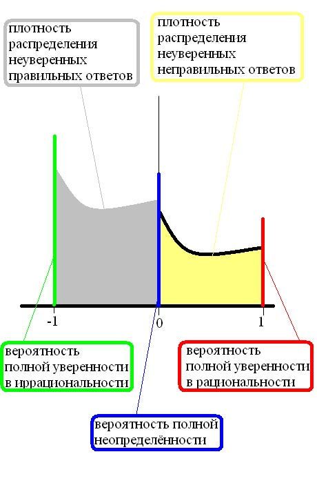

Опубликовано 2007-04-15 Последняя редакция: . по адресу http://www2.sunysuffolk.edu/kasiuka/socionics/html/reinin-theory.html
Определение. Множество из четырёх элементов:
будет называться дихотомиями Юнга, и обозначаться J.
Соционическое типирование основано на использовании четырёх дихотомий Юнга. Использованный выше порядок дихотомий соответствует написанию, принятому в типировании по сходной методике Майерс-Бриггс. Каждая из дихотомий Юнга независимо делит множество всех людей на две группы. Все вместе, четыре дихотомии Юнга разбивают множество всех людей на 16 типов, называемых Типами Информационного Метаболизма (далее: ТИМами). Для каждой из дихотомий, у половины ТИМов выполнена одна альтернатива этой дихотомии, и у другой половины — другая альтернатива.
Основная трудность в определении типа с помощью дихотомий Юнга заключается в том, что для многих тестируемых затруднительно выбрать одну из альтернатив, предлагаемых той или иной дихотомией. Мы не касаемся здесь природы этого явления. Анализ статистических данных, собранных в процессе типирования по сходной методике Майерс-Бриггс, показал что распределение ответов соответствует нормальному, а не бимодальному. Поэтому одно из возможных объяснений трудности дихотомического типирования — неверность постулата о дихотомичности вышеназванных четырёх характеристик. Возможно и альтернативное объяснение этой трудности. А именно, можно предположить, что у некоторых людей та или иная характеристика (даже будучи объективно представленной в психике) "провалена" и не проявлена в наблюдаемом виде. Одно из возможных решений этой проблемы было предложено Григорием Рейниным. Его идея заключалась в рассмотрении других дихотомий, в дополнение к четырём дихотомиям Юнга. Рейнин дал формальное математическое определение одиннадцати дихотомий, которые вместе с дихотомиями Юнга называются признаками Рейнина. Позднее было описано наполнение этих признаков, т.е. их соответствие наблюдаемым психологическим характеристикам.
При использовании признаков Рейнина в типировании, испытуемый даёт пятнадцать взаимозависимых ответов. Достигаемая за счёт этого избыточность информации повышает (по сравнению с типированием лишь по дихотомиям Юнга) шанс выделения "полезного сигнала". Фактически, эта идея является применением к соционическому типированию теории кодов, исправляющих ошибки.
Напомним некоторые понятия и фиксируем наши обозначения. Множество функций с областью определения X и областью значений Y будет обозначаться F( X, Y ). При этом предполагается, что X и Y — произвольные множества. Если множество Y имеет структуру линейного пространства, то и множество функций F( X, Y ) также имеет структуру линейного пространства. Для элементов F( X, Y ), операции векторного сложения и произведения на число определяются поточечно. Например, если f и g — две функции из F( X, Y ), то их сумма в смысле линейного пространства F( X, Y ) определяется как функция, принимающая в точке x значение f( x ) + g( x ).
Определение. С формальной точки зрения, множество ТИМов T — это множество функций с областью определения J и областью значений Z/2Z (где Z/2Z — группа вычетов по модулю два):
Если фиксировать порядок дихотомий, Кроме того, для каждой из дихотомий нужно зафиксировать порядок альтернатив, относящихся к этой дихотомии. то каждую функцию на множестве J можно записать в виде строки её значений. Например, при использовании порядка указанного выше, ТИМ 'Есенин' будет соответствовать функции t = ( 1, 0, 1, 0 ), что означает: экстравертность (0) — интровертность (1), интуиция (0) — сенсорика (1), логика (0) — этика (1); иррациональность (0) — рациональность (1).
Поскольку Z/2Z является полем (а, значит, тем более — линейным пространством), то множество ТИМов T и само имеет структуру четырёхмерного линейного пространства над полем Z/2Z.
Определение. Множество всех возможных соционических признаков A — это множество всех функций с областью определения T и областью значений Z/2Z:
Каждая функция h из A задаёт дихотомию (т.е. разбиение на две части) на множестве всех ТИМов T. Для всех тех ТИМов, на которых функция h принимает значение 1, выполняется одна альтернатива этой дихотомии, а для ТИМов, на которых h принимает значение 0 — выполняется другая альтернатива. Мы не предполагаем, что те две части, на которые каждая функция из A разбивает множество ТИМов T, состоят из равного числа элементов (т.е. восьми). В частности, мы рассматриваем постоянные функции, которые дают вырожденные разбиения T: на пустое множество и всё множество T. Функция h( t ) задаёт то же самое разбиение, что и функция 1 - h( t ). Поэтому 216 функций из A задают лишь 216 / 2 - 1 = 215 - 1 различных невырожденных разбиений множества T. Множество всех признаков А имеет структуру шестнадцатимерного линейного пространства над полем Z/2Z.
Определение. Имеется каноническое вложение множества дихотомий Юнга J во множество всех соционических признаков А. А именно, допустим что x — одна из четырёх дихотомий Юнга. Тогда дихотомии x соответствует функция на множестве ТИМов, принимающая на ТИМе t значение t( x ). Линейная оболочка в линейном пространстве A образа канонического вложения J в A называется признаками Рейнина.
Образ J при каноническом вложении в A образует линейно независимую систему векторов. Поэтому признаки Рейнина — это четырёхмерное подпространство в шестнадцатимерном линейном пространстве A, а образ J при каноническом вложении в A — базис этого пространства. Множество всех признаков Рейнина изоморфно (Z/2Z)4 — и как множество, и как группа, и как линейное пространство над полем Z/2Z. В частности, получаем что всего признаков Рейнина шестнадцать. В конце этого раздела будет объяснено, почему обычно рассматривают пятнадцать признаков Рейнина, а не шестнадцать. Отождествляя дихотомии Юнга J с их образом при каноническом вложении в A, а признаки Рейнина — с (Z/2Z)4, можно написать цепочку строгих вложений:
т.е. признаки Рейнина включают в себя (в качестве базиса) все дихотомии Юнга и сами входят в список всех возможных соционических признаков.
Замечательное свойство признаков Рейнина в том, что каждый из них (кроме нулевого) разбивает множество всех ТИМов T на две части из равного числа элементов Именно это свойство Рейнин назвал биполярностью. (т.е. восьми). Более того, два различных признака Рейнина задают два различных разбиения T (иначе говоря, если h( t ) признак Реннина, то 1 - h( t ) не есть признак Рейнина). Таким образом, признаки Рейнина задают пятнадцать нетривиальных разбиений множества всех ТИМов T. Обычно именно эти невырожденные разбиения и называют признаками Рейнина и потому говорят о пятнадцати признаках. Нулевой признак Рейнина даёт вырожденное разбиение, и потому его использование в типировании лишено смысла.
По построению, признаки Рейнина образуют четырёхмерное линейное пространство над полем Z/2Z и дихотомии Юнга J образуют базис этого линейного пространства. Напомним, что мы отождествляем множество J с его образом при каноническом вложении в линейное пространство A. Любой другой базис пространства признаков Рейнина (а не только дихотомии Юнга) даёт четвёрку дихотомий, достаточных для определения ТИМа. Найдём число всех таких четвёрок, т.е. число всех возможных базисов в линейном пространстве всех признаков Рейнина.
Теорема. Допустим что L — n-мерное линейное пространство над конечным полем из q элементов. Тогда число элементов в полной линейной группе пространства L выражается следующей формулой:
Наш случай — это четырёхмерное (n = 4) пространство признаков Рейнина L над полем из двух (q = 2) элементов. Подставляем и получаем:
Поскольку базисы линейного пространства образуют главное однородное пространство полной линейной группы этого пространства, получаем что среди признаков Рейнина можно выбрать базис 20160 способами. Если игнорировать различие в порядке базисных элементов, то полученное число 20160 нужно поделить на 4! = 24 (т.е. на число способов упорядочения четырёх базисных элементов. Получаем:
Таким образом, имеется 840 способов выбрать четыре независимые дихотомии из пятнадцати ненулевых признаков Рейнина. Любой такой четвёрки дихотомий достаточно, чтобы определить ТИМ.
Один из возможных способов использования признаков Рейнина в соционическом типировании следующий.
Видимо, так работает этот калькулятор. В следующем разделе мы рассмотрим альтернативный способ.
Мы будем подходить к вопросу соционического типирования с вероятностной точки зрения. В этом разделе мы рассмотрим допущения и посылки, лежащие в основе конструкции вероятностного калькулятора Рейнина.
Первая посылка: соционический ТИМ объективно существует. Как следствие, соответствующий соционическому типированию статистический эксперимент состоит в следующем. Произвольно выбранный человек произвольного соционического ТИМа характеризует тем или иным способом свою субъективную уверенность в выраженности у него той или иной альтернативы каждого из пятнадцати признаков Рейнина. Исходами (т.е. элементарными событиями) этого эксперимента являются наборы вида (t, s1, s2, ... , s15), где t — это ТИМ тестируемого, а si (для всех i, таких что 1 ≤ i ≤ 15) — это вещественное число в интервале [ -1, 1 ], выражающее степень уверенности тестируемого в выраженности у него левой (значения s вблизи -1) или правой (значения s вблизи 1) альтернативы i-го признака Рейнина. (В предлагаемом калькуляторе степень уверенности выбирается с помощью ползунка. Поэтому в дальнейшем мы будем называть si положением i-го ползунка.) Таким образом, множество исходов нашего эксперимента состоит из шестнадцати пятнадцатимерных кубов. Обозначим это множество R.
Вторая посылка: существует распределение вероятности P на множестве R. Таким образом, множество R является вероятностным пространством и задача калькулятора Рейнина сводится к нахождению апостериорного распределения вероятности на множестве T всех соционических ТИМов. Более точно, для каждого данного набора (s1, s2, ... , s15) результатов прохождения теста, калькулятор Рейнина должен рассчитать условную вероятность того, что испытуемый имеет ТИМ t*:
Третья посылка: распределение вероятности P на пространстве R непрерывно и описывается некоторой функцией плотности
Как следствие, вероятность P( t* | s1, s2, ... , s15 ) может быть найдена с помощью формулы Байеса:
| P( t* | s1, s2, ... , s15 ) = | g( t*, s1, s2, ... , s15 ) |
| k( s1, s2, ... , s15 ) |
где
В свою очередь,
где
С помощью формулы полной вероятности, плотность маргинального распределения k( s1, s2, ... , s15 ) может быть (также как и плотность g) выражено через плотность f( s1, s2, ... , s15 | t ) :
| k( s1, s2, ... , s15 ) = | ∑ | f( s1, s2, ... , s15 | t ) · P( t ) |
| t ∈ T |
Здесь суммирование происходит по всем возможным ТИМам, поэтому сумма содержит всего 16 членов.
Соединяя воедино все полученные формулы, получаем следующее выражение:
| f( s1, s2, ... , s15 | t* ) · P( t* ) | |||||
| P( t* | s1, s2, ... , s15 ) = | _________________________________ | ||||
|
Четвёртая посылка: все ТИМы априорно равновероятны: P( t ) = 1/16. Как следствие, получаем формулу:
| f( s1, s2, ... , s15 | t* ) | |||||
| P( t* | s1, s2, ... , s15 ) = | ___________________________ | ||||
|
Осталось разобраться с f( s1, s2, ... , s15 | t* ) — плотностью распределения вероятности того, что испытуемый имеющий ТИМ t* выберет степени выраженности признаков Рейнина s1, s2, ... , s15. Эти плотности распределения однозначно определяют распределение вероятности на всём пространстве R (при известной частоте ТИМов в популяции или в предположении об их равновероятности).
Пятая посылка: выборы тестируемым значений дихотомий s1, s2, ... , s15 независимы Во избежание неверного толкования этой посылки следует подчеркнуть, что речь идёт не о независимости признаков Рейнина (которые, конечно, зависимы), а о независимости ошибок диагностики различных признаков Рейнина. друг от друга. Как следствие, получаем:
Здесь ri,t*( si ) — плотность маргинального распределения вероятности того, что испытуемый имеющий ТИМ t* выберет значение si при рассмотрении i-го признака Рейнина.
Шестая посылка: плотность маргинального распределения вероятности ri,t*( si ) описывается формулой:
| 1 | 1 | ||
| ri,t*( s ) = | ___ | si,t* · s + | ___ |
| 3 | 2 |
Здесь коэффициент si,t* равен -1 или 1 в зависимости от того, какая из двух альтернатив i-го признака Рейнина проявляется у ТИМа t. Все эти коэффициенты образуют матрицу, называемую матрицей Рейнина. Строки этой матрицы соответствуют признакам Рейнина (и их 15), а столбцы — ТИМам (и их 16). Вот эта матрица: Соответствие строк — признакам Рейнина, а столбцов — ТИМам, задаётся упорядочиваниями признаков и ТИМов, использованными на странице калькулятора.
| ( si,t* ) = |
Калькулятор Рейнина, основанный на этих посылках, доступен здесь.
Первые две посылки слишком фундаментальны, чтобы от них можно было отказаться без существенного пересмотра самих основ соционики. Все остальные посылки строго говоря неверны и их пересмотр даёт возможные направления улучшения калькулятора.
Третья посылка (о непрерывности распределения) будет рассмотрена ниже, совместно с шестой (о функции плотности распределения одного единственного ползунка).
Четвёртая посылка постулирует априорную равновероятность ТИМов. В процессе типирования по методике Майерс-Бриггс были собраны статистические данные о частоте различных типов в популяции Соединённых Штатов. Полученные на основе этих данных оценки частоты различных типов имеют значительный разброс. Так, например, тип ISFJ ('Драйзер') имеет частоту 13,8%, тогда как INFJ ( 'Достоевский' ) имеет частоту 1,5%. Возможное усовершенствование калькулятора — принять в качестве вероятности P( t ) имеющуюся оценку частоты ТИМа t в популяции и корректиривать её в процессе получения новых статистических данных.
Пятая посылка постулирует независимость положений двух разных ползунков. В идеале, выборы испытуемым положений различных ползунков действительно должны быть независимыми. Однако имеющиеся описания наполнения признаков Рейнина допускают очень близкие толкования многих дихотомий. Уже лишь в силу этого, можно предположить (например), что человек, уверенный в доминировании логики над этикой в своей психике, с большей вероятностью выберет доминирование рациональности над иррациональностью и конструктивизма над эмотивизмом. По-видимому, лучший способ борьбы с подобными зависимостями — это улучшение описаний наполнений признаков Рейнина.
Третья посылка (о непрерывности распределения ползунков) и шестая посылка (о точной форме функции плотности распределения одного ползунка) являются очевидным упрощением.
Первая неадекватность шестой посылки, опять же, упирается в несовершенство имеющихся описаний наполнений признаков Рейнина. Различные признаки описаны с разной точностью и, в силу этого, с разной же точностью (само)диагносцируются. Поэтому постулат об идентичности характера распределения для разных ползунков вряд ли соответствует действительности. Тогда как в идеале каждое распределение, характеризуемое плотностью ri,t*( s ), должно быть сильно дискриминирующим (т.е. иметь большую часть своего веса у одного из двух концов интервала [ -1, 1 ]), можно предположить почти полную симметрию некоторых таких распределений (а именно, распределений, соответствующих плохо понятым и плохо описанным признакам Рейнина). Скорректировать эту ошибку имеющегося калькулятора можно двумя способами. Во-первых — это улучшение описаний наполнений признаков Рейнина (как и в предыдущем пункте). Во-вторых можно оценить дискриминирующую способность различных дихотомий и соответствующим образом скорректировать их распределения. А именно, в принятой нами формуле для плотности распределения ri,t*( s ):
| 1 | 1 | ||
| ri,t*( s ) = | ___ | si,t* · s + | ___ |
| 3 | 2 |
коэффициент 1/3 как раз и характеризует дискриминирующую способность данной дихотомии. Варьируя этот коэффициент в интервале
(0 — никакой дискриминации, 1/2 — хорошая дискриминация) можно скорректировать наше предположение о равной дискриминации разными дихотомиями. Такая коррекция усилит вес хорошо понимаемых признаков Рейнина и уменьшит вес тех, имеющееся толкование которых затруднительно и неоднозначно.
Вторая неадекватность шестой посылки связана с неадекватностью третьей посылки о непрерывности распределения вероятности на пространстве исходов типирования. Рассмотрим для определённости следующий пример.
Возьмём ТИМ
Реальное распределение вероятности (которое мы, возможно несколько поспешно, охарактеризовали плотностью ri,t*( s )) соответствует следующему мысленному эксперименту. Возьмём всех когда-либо живших или ещё не родившихся 'Дон Кихотов'; дадим им описание дихотомии 'иррациональность — рациональность' и попросим их выразить с помощью ползунка степень их субъективной уверенности в наличии у них признака рациональность или иррациональность. Положение ползунка s выбирается из интервала [ -1, 1 ]. Сдвиг в сторону -1 выражает уверенность в иррациональности, а в сторону 1 — рациональности. Понятно, что какая-то часть типируемых ошибётся и посчитает себя на 100% рационалами, какая-то часть правильно посчитает себя на 100% иррационалами, какая-то часть (поленившихся или недопонявших описание дихотомии) оставит ползунок на нуле, а остальные как-то распределятся по интервалу. Поэтому соответствующее распределение вероятности на интервале [ -1, 1 ], скорее всего, будет иметь ненулевой вес в точках -1, 0, 1, т.е. будет смешанным, а не непрерывным. Можно предположить, что вид распределения будет примерно таким:
